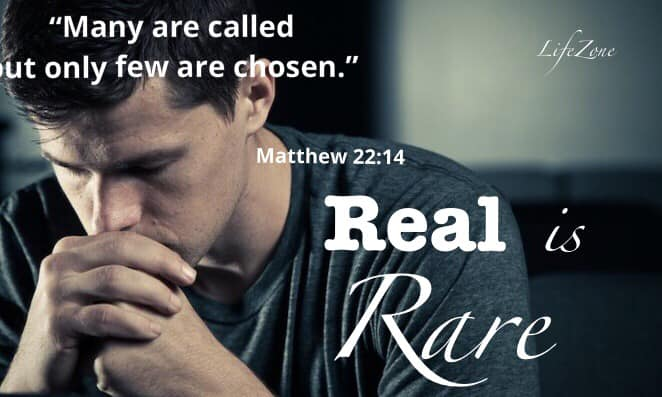

November 2018 Series

Based on Acts 1:11, Pastor Noel S. De Asis aims to equip and encourage the church with many biblical facts about the second coming of the Lord Jesus Christ. This is our blessed hope. This is the anchor that holds us so strong in our faith. This is the promise that brings us hope. Do not miss this series as we learn more of the signs and the purposes of His return.
This Week's Message
Based on Acts 1:12-26, Pastor Noel S. De Asis aims to equip and encourage the church with this segment in Acts 1 on the replacement of Judas Iscariot as one of the original twelve apostles. This is a very dramatic yet life-changing series as Jesus prayed hard to choose the twelve and his extended grace to Judas Iscariot. Do not miss this series as we learn more from the story of Judas and how we can apply them to our own journey of faith and relationship with our Savior.